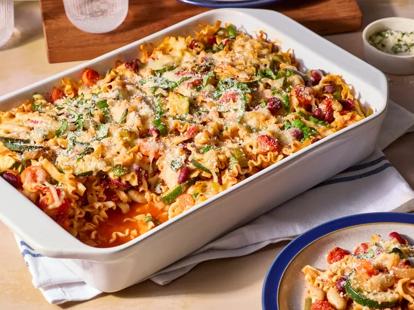

Minestrone Casserole
Ingredients
- 2 tablespoons olive oil, divided
- 4 large links hot Italian sausage
- 6 bone-in, skin on chicken thighs
- ½ pound assorted sweet peppers, seeded
- 4 large Yukon Gold potatoes, quartered
- 1 small red onion, sliced
- ½ medium yellow onion, sliced
- 2 teaspoons dried Italian herbs
- 2 teaspoons kosher salt
- freshly ground black pepper to tast
- 1 tablespoon chopped fresh Italian parsley
Steps
-
Step 1
Preheat the oven to 450 degrees F (230 degrees C).
-
Step 2
Heat 1 tablespoon oil in a skillet over medium heat. Add sausage links and cook until browned and fat begins to render, about 3 minutes per side. While they cook, lightly pierce sausages in several places with the tip of a sharp knife to release fats and juices. Remove from the heat and place on a cutting board to cool slightly, 3 to 5 minutes.
-
Step 3
Cut cooled sausages into 2-inch slices; return to the skillet along with any accumulated juices from the cutting board.
-
Step 4
Cut two slashes down to the bone on the skin side of each chicken thigh. Halve or quarter any large peppers.
-
Step 5
Place chicken and peppers into a large mixing bowl with onions, sausage and juices, Italian herbs, salt, and pepper. Drizzle with remaining 1 tablespoon oil and mix with your hands until all ingredients are coated in oil, 3 to 4 minutes.
-
Step 6
Transfer mixture to a large, heavy-duty roasting pan. Evenly space chicken thighs with the skin facing up and position potatoes near the top.
-
Step 7
Roast in the preheated oven until chicken is cooked through and everything is caramelized, about 1 hour. An instant-read thermometer inserted near the bone should read 165 degrees F (74 degrees C). Sprinkle with chopped fresh Italian parsley.